Procedural Water Shader and First Impressions of Unity's Shadergraph/HLSL pipeline
2/21/25
Intro
In my upcoming rhythm game hyperRunner2.5D I am developing a boss fight that will take
the form of a street race.
I was introduced to real-time computer graphics after taking a computer graphics class in C++ and OpenGL. I'm excited to apply what I learned to my game.
Let's make a water shader. I already had implemented a curved world shader that resembles animal crossing,
following this great youtube tutorial from Rigor Mortis Tortoise.
This shader modifies the vertex positions of a mesh to emulate a curved world, lowering vertices that are farther away from the camera,
similar to Subway Surfers or Animal Crossing. It looks great for the racing
minigame. I used this shader as the base to create the dynamic water effect.
Preparing the Mesh with Blender
First thing I did was subdivide a plane in blender a couple times.
After experimentation 4,225 vertices gave me enough detail for small/medium
sized waves. These vertices will be manipulated by the water shader to emulate waves on the surface of water. The plane object was
UV unwrapped as well, so it will work with our perlin noise.
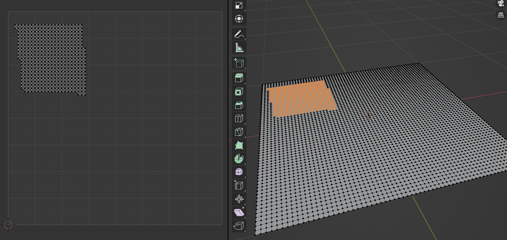
Shadergraph
Below is the main section of the shader graph file.
The curved world shader bits are added into the pipeline later, this
image focuses on water. outPos(3) and normal(3) all the way on the top right
are the end products that we feed into the Position() and Normal() channel
of the Fragment shader node.
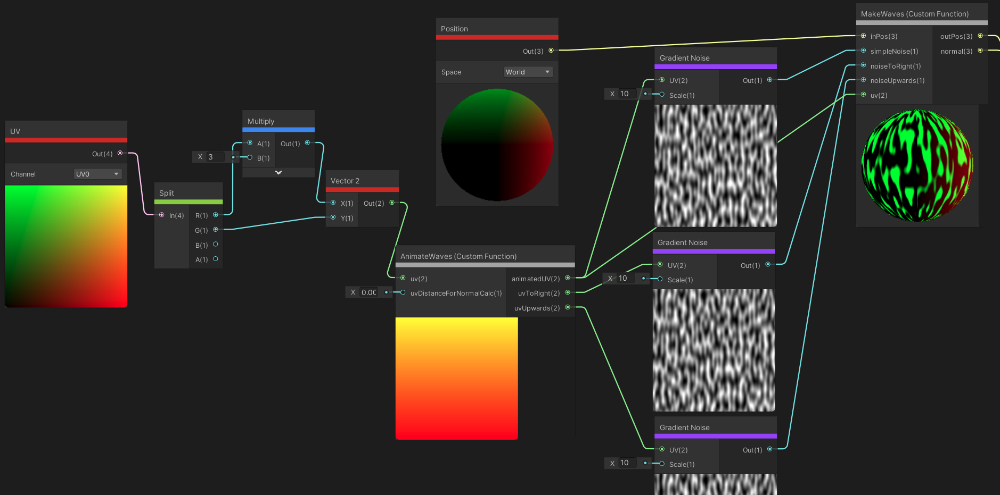
Lets split into sections.
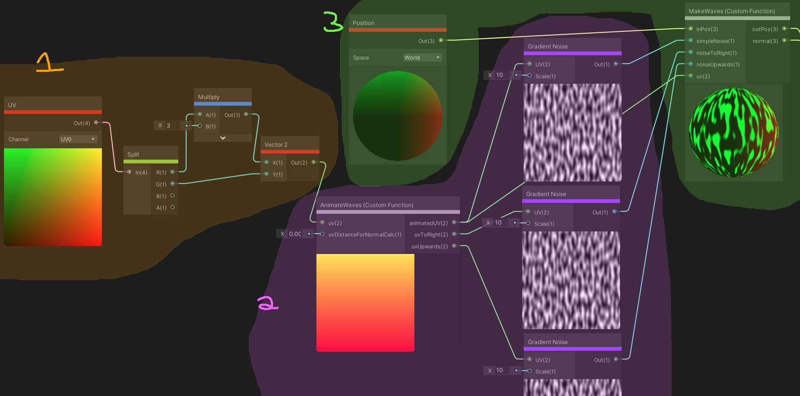
Section 1: Preparing the plane UV coordinates
I first take the UV coordinate of the vertex/frag on the plane. Because I scaled the plane
to have a ratio of x y scale 3:1 in Unity,
I also need to scale the UV coordinates so that the noise is not disorted in the X direction.
This is why we multiply the x UV coordinate by 3. We then feed the transformed UV coordinate
into our animate waves function. This is what gives the waves motion.
Section 2:
AnimateWaves.hlsl
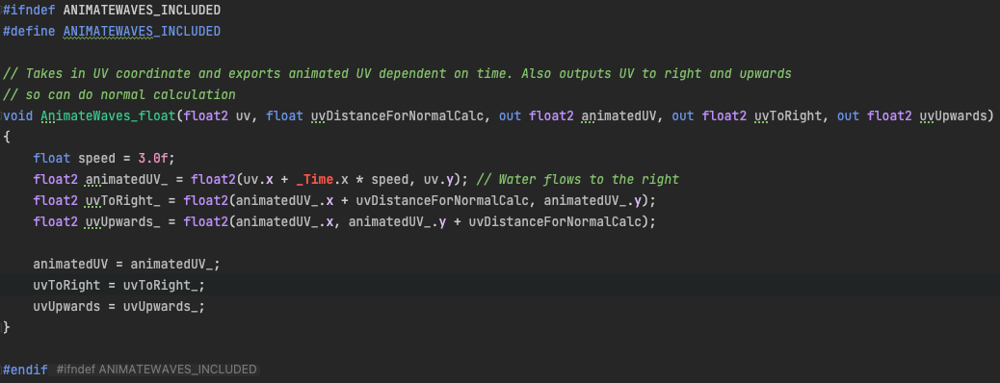
This is a Shadergraph custom node that I wrote. Shadergraph provides some nodes themself, such as
noise nodes, math nodes (multiplication/addition etc.), and more. There is a lot you can do
with the built in Shadergraph nodes, but I find it can be cleaner and more precise to write custom
nodes when things get more complicated. That said this is a pretty simple script. The idea is that
we get the UV coordinate from the vertex or fragment (Shadergraph decides this and I'm still unclear
how they decide, more on this later), and we want to move the x UV coordinate over time. If we
move the x UV coordinate over time, and keep the noise static, we create a horizontal scrolling effect
emulating waves moving.
Let's discuss the inputs and outputs! Inputs
uv is the UV coordinate obtained from Section 1
uvDistanceForNormalCalc is a small value that was tweaked to calculate
vertex normals (more on this later)
Outputs
animatedUV The UV coordinate after movement for this render step
uvToRight The UV coordinate after movement just to the right of this vert/frag
uvToUpwards The UV coordinate after movement just above this vert/frag
animatedUV is calculated by adding a factor of _Time. x to the original UV
x coordinate. _Time is a built in
Unity shader variable
that provides the Time since this scene has loaded. Through experimentation, we don't need to
wrap the animatedUV between 0 and 1, which is normally what UV coordinates are wrapped
between. Unity will do this wrapping for us so we can just keep adding _Time. x
without clamping anything.
uvToRight and uvUpwards are simply the UV coordinates just above the animated UV
and just to the right of the animated UV. This is used to calculuate the normal value of this
vert/frag. Because we are modifying the vertex positions in the shader, we need to also update
their normals so that the lighting reflects these new positions. Finally, we feed these output
UVs into noise nodes. The noise node takes in a UV coordinate, and gives us a value between
0 and 1. The gradient noise node gives us continous noise, which is random values that blend
into each other, resembling topology of terrain. We decide that white values (1) is the highest
height a wave can be, and that black values (0) is the lowest height a wave can be. In Section 3,
we apply these noise values to actually change the position and normal of each vertex/frag.
Section 3
In this final section, we put everything together to get the position and normal of the vertex/fragment
in pipeline.
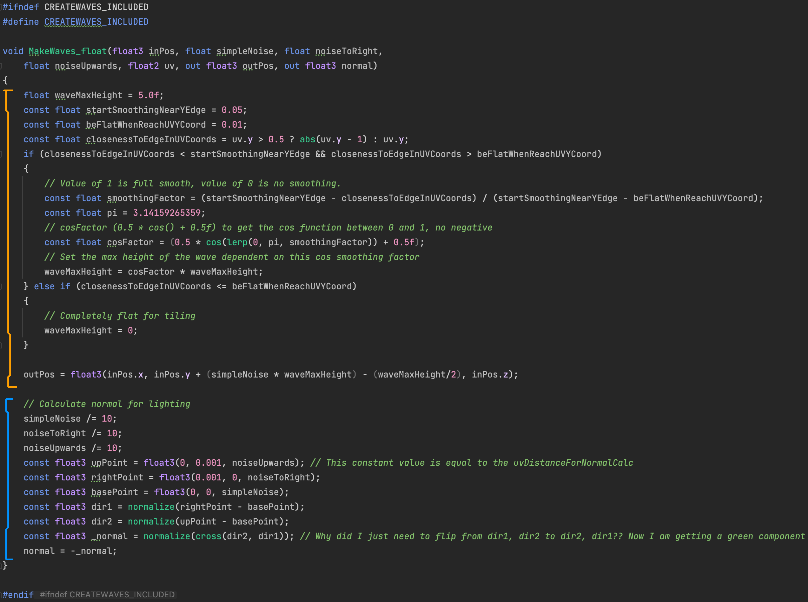
Height of the Wave (Orange Section)
The orange section of the code determines the height of the vert/frag. waveMaxHeight is the amplitude of the wave,
which I chose to be 5.0f for this scene's purposes.
Now one may think- "This section could be one line!
We could simply use our simpleNoise value from the noise texture, which will be between 0 and 1,
and multiply it by waveMaxHeight and add it to the y position to get our final out position! Right?"
Right! But there's a catch. While this would
work great for a singular body of water, what if we need multiple bodies of water to tile? This is the situation for this bossfight,
as I want the effect of endlessly scrolling waves as the player races along the river. If we just use a singular line of code as suggested, the waves look like this when placing two
water objects back to back.
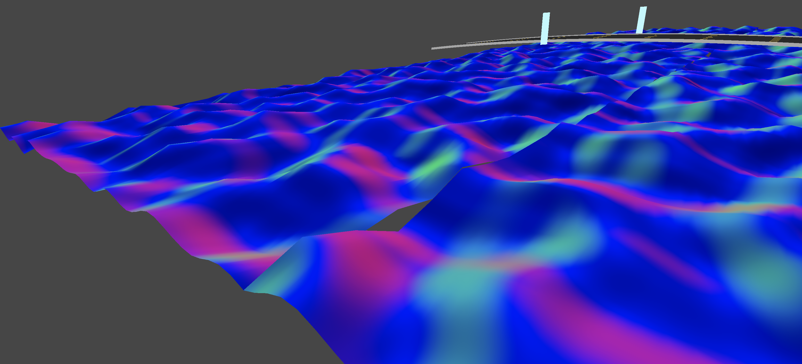
The wave shape looks pretty good! But there is a issue. The bodies of water don't tile together. There is a seam
where one water object starts and the other water object begins. This seam breaks the illusion of one continuous body of water.
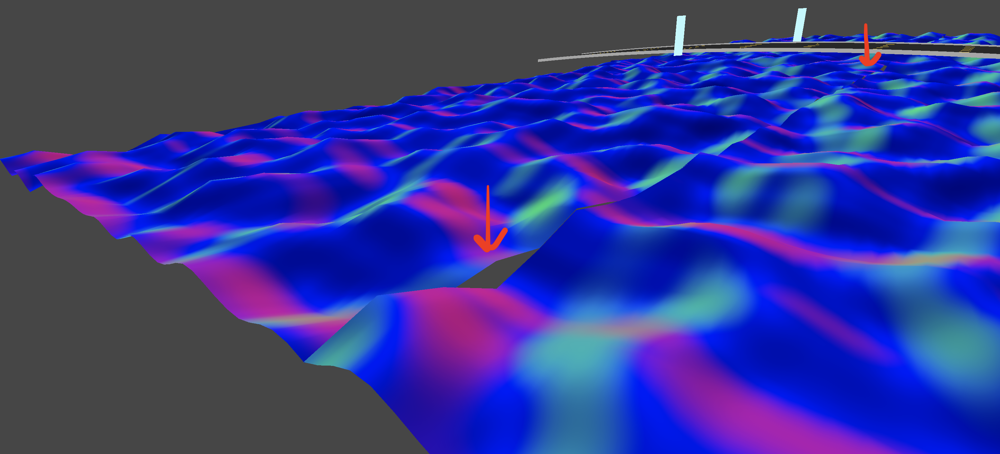
To remedy this, we need the height values at the top of one body of water to equal the height values of the
bottom of the next body of water. For simplicity, I decided to set these wave heights to 0 when getting close to the
vertical edge of the noise texture. This way, the waves will tile vertically and the two objects will seem like one
continuous mesh. I experimented with this, and set the waveMaxHeight to 0 when UV coordinate was near the top or bottom
of the texture and got the result below.
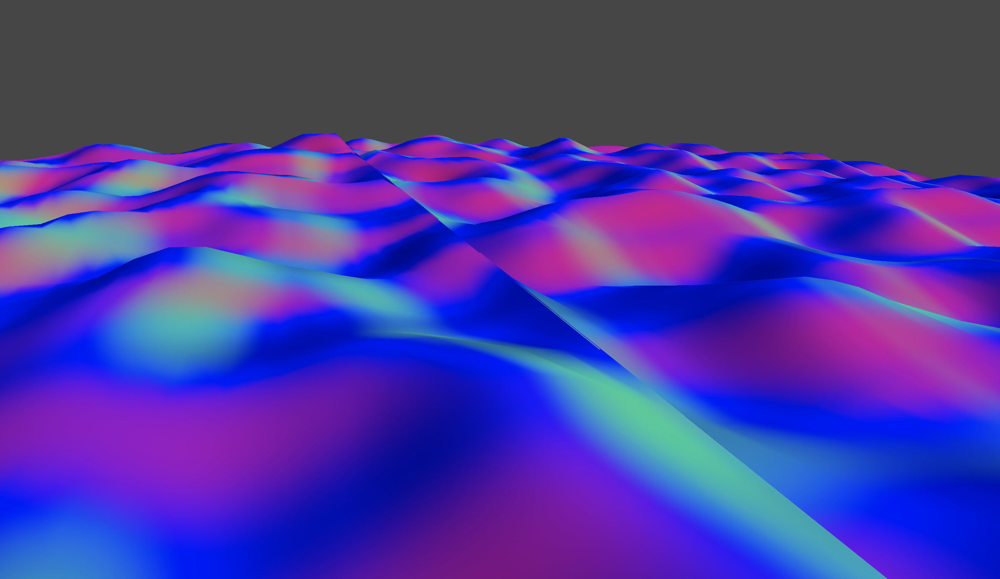
This looks pretty good! It looks like one continuous mesh now. But see how there's a little ramp where the two water objects meet?
This also kinda breaks the illusion of a continuous body of water. This is because we are forcing the wave height to be 0 near the edges
without any type of smoothing. Let's smooth this transition out.
We want to start smoothing when the vert/frags UV coordinate is closer to a vertical edge than startSmoothingNearYEdge.
We want the smoothing to end and the waveMaxHeight to be 0 when the vert/frags UV coordinate is closer to the vertical edge than
beFlatWhenReachUVYCoord. We calculate our smoothingFactor which is a value between 0 and 1, 0 indicating no smoothing (waveMaxHeight
is unchanged) and
1 indicating full smoothing (which means waveMaxHeight should be 0). We then pipe this smoothingFactor into a cosine
function, lerping it between 0 and pi. This give us a great smoothing curve that emulates a wave. We
pipe the smoothingFactor into a slightly modified cos function that has amplitude between 0 and 1 to get our cosFactor
value.
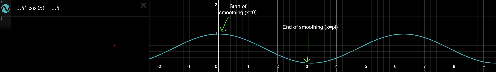
Our waveMaxHeight is scaled by our cosFactor to ensure that when just inside entered the smoothing zone, amplitude
of wave is mostly unchanged, but as we enter farther into the smoothing zone the max wave height will slowly become 0 in a sinusoidal
fashion until it bottoms out at 0 to tile. The result is below.
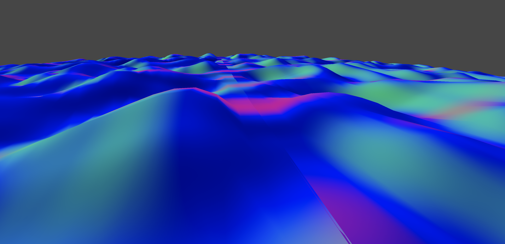
Pretty smooth tiling! One imperfection is that if a player looks hard enough, they may be able to see that the body of water is the
same height for a horizontal strip. But during high speed racing gameplay, and even from a birds-eye view, I think this imperfection will
go unnoticed.
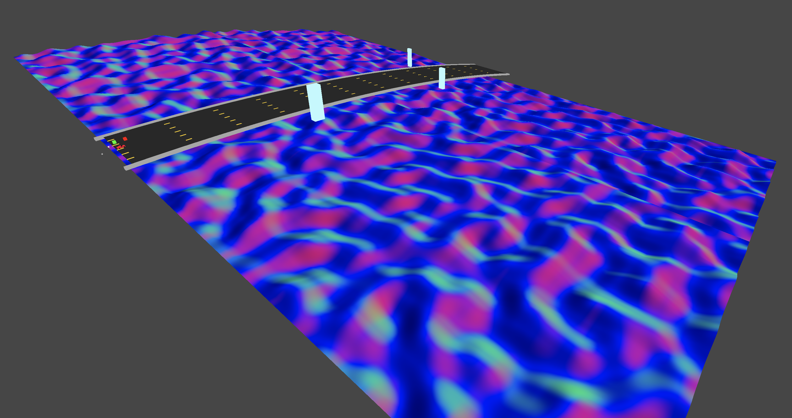
This is one of the things that I love about graphics programming. Small imperfections don't matter! As long as it looks good, it
is good, even if some corners are cut.
Generating Normals (Blue Section)
In the blue section of our MakeWaves function, we calculate the normal of the frag/vert. We need normals so that
diffuse lighting and specular lighting will work on our waves in real-time! Remember that
we aren't actually changing the plane mesh that represents the water. We change the position of vertices of the plane in the shader itself,
so we need to update the normals of the vert/frag depending on the topology of plane after new position value is determined.
I use 3 noise values from the
previous section: noise value at this UV,
slightly to the right of this UV, and slightly above this UV. The idea is that I use these values to generate
a vector in the direction to the right, and a direction up. These two vectors describe a plane, which is a plane on
the surface of the water at the vert/frag position. I then take the normal of this plane to generate the normal vector of the frag/vert, which is
outputted as normal. To be honest, the axis directions in unity positional space and the axis directions in texture space
didn't completely match up with my mental model I made in my head, so the last two lines of this section I flipped and negated
after trial and error in Unity to get the normal colors to match with the world axis. Nevertheless the normals look good! And the normals
from the algorithm are
actually shown as the color of the water in the pictures above in the orange section of the code.
One thing to note is that we don't take into the smoothing factor while calculating the normals. This causes the flat section
of the waves to have incorrect normal calculations as shown below.
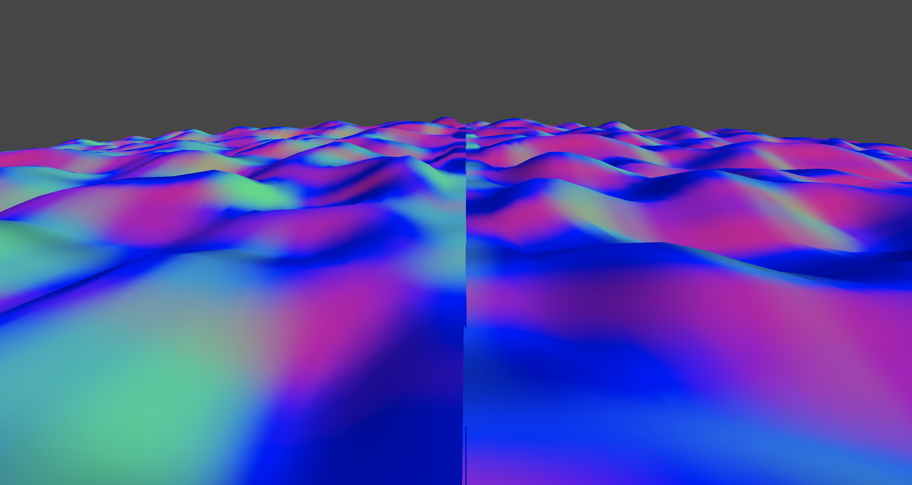
This would be a somewhat easy fix, but during gameplay light bounces around fine and it is not noticeable, so I feel
no need to fix this anytime soon!
Results
Here are some videos of the final result!
This video above is pretty nice. Shows the movement of the waves and some of the lighting. One thing I noticed is that
There is a grid like pattern that pops up on the water in the shadows. Super interesting result, not sure why this is happening
but pretty sure this artifact is from the normal calculation.
This would be something fun look into in the future. For now though, during gameplay it isn't too noticeable and I think it adds
some character! This boss level will be the bossfight for my Cyber World level, which already has a grid as the floor! So maybe this
grid artifact is a happy accident. Gameplay below of cyber rhythm level.
Other Notes and Follow Up Questions
In Shadergraph, I still don't understand whether I am working with a vertex or a fragment. Coming
from OpenGL, it was a little trippy as OpenGL has a strictly separated vertex and fragment
shader. In Shadergraph, nodes can go to both the vertex or the fragment node. The vertex and fragment
node both have a position, normal, and tangent. Will look into this more and update.